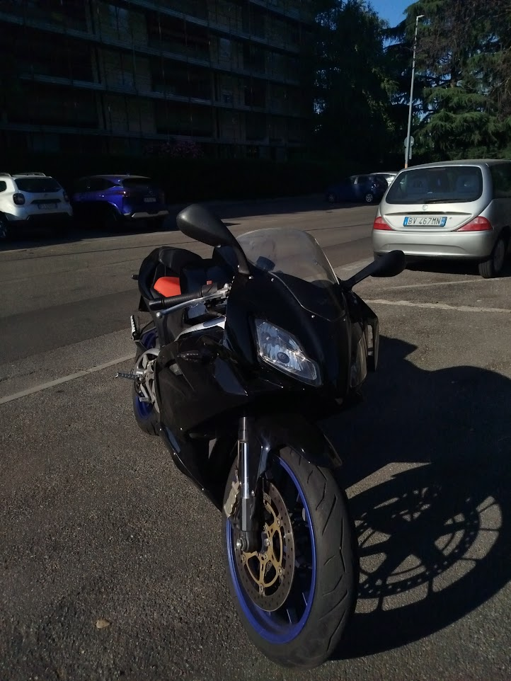
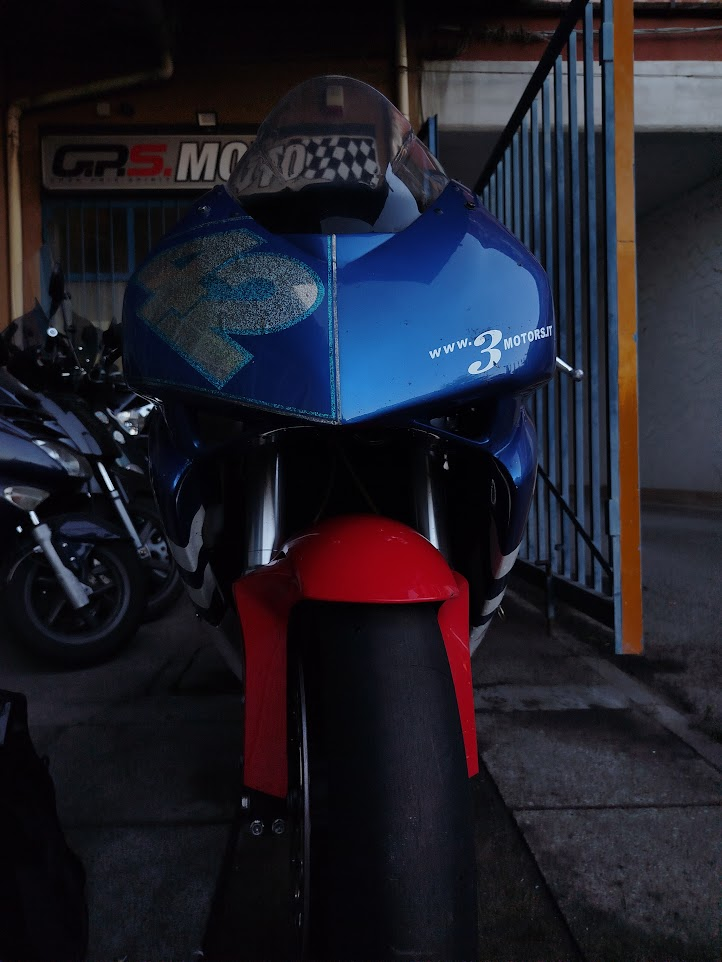
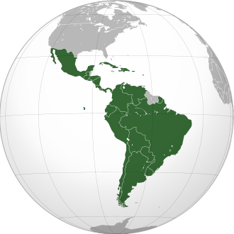
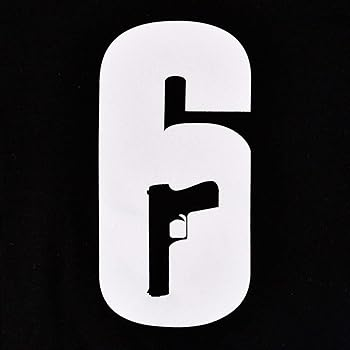

Hobby e Interessi
Oltre all'informatica, ho molte passioni che arricchiscono il mio tempo libero:
- Moto: RS125 2006- Cbr1000.
- Viaggi: Amo scoprire nuovi luoghi e culture, specialmente latino americane.
- Videogiochi: Mi diverto con giochi di strategia e avventura come R6.




Torna al menu